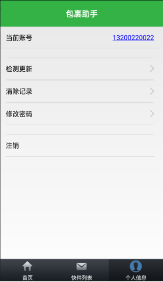

原文出处:本文由博客园博主chen1880提供。
原文连接:https://www.cnblogs.com/chen1880/p/11262357.html
原文连接:https://www.cnblogs.com/chen1880/p/11262357.html
一． 平台信息配置
http://117.25.162.156:8361/ 用户名：admin 密码：admin@box
1. 添加设备
设备管理->添加设备（输入设备ID+设备名称）
2. 添加格口
下载 格口信息配置表 -> 提取码：se05
设备管理->格口管理->选择box.csv->导入格口信息
3.添加投递员
投递员管理->添加投递员（输入姓名+手机号）添加完成后自动生成该投递员的登录密码
二． APP下载并注册（默认短信动态码都是123456）
Android APP -> 提取码：v4zl

三． 终端下载并配置
1.系统环境配置
快递柜终端软件(环境配置)-window -> 提取码：0dpe
① install文件夹下安装jdk_8.0.1310.11_64.exe
② install文件夹下安装ekho-5.8.exe
③ install文件夹下jar,dll文件拷贝C:\Windows\System32
2. 运行包配置
快递柜终端软件(运行包) -> 提取码：hbkm
① 解压terminal.zip (WatchDog_Service.bat、SuperBox_Service.bat、soft文件夹)
② 修改配置信息
③ 运行WatchDog_Service.bat，在待机界面按F5进入后台
程序运行（使用平台添加的快递员账户和密码登录）
17.png)